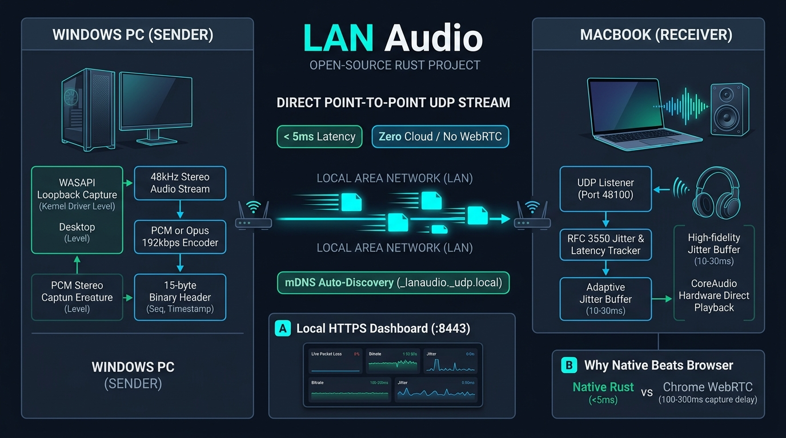

Lan Audio
A Rust audio streamer that sends desktop audio from a Windows PC to a Mac over a local network. It uses direct UDP streaming and native audio capture and playback, avoiding cloud services and browser-based streaming.
View repository on GitHub